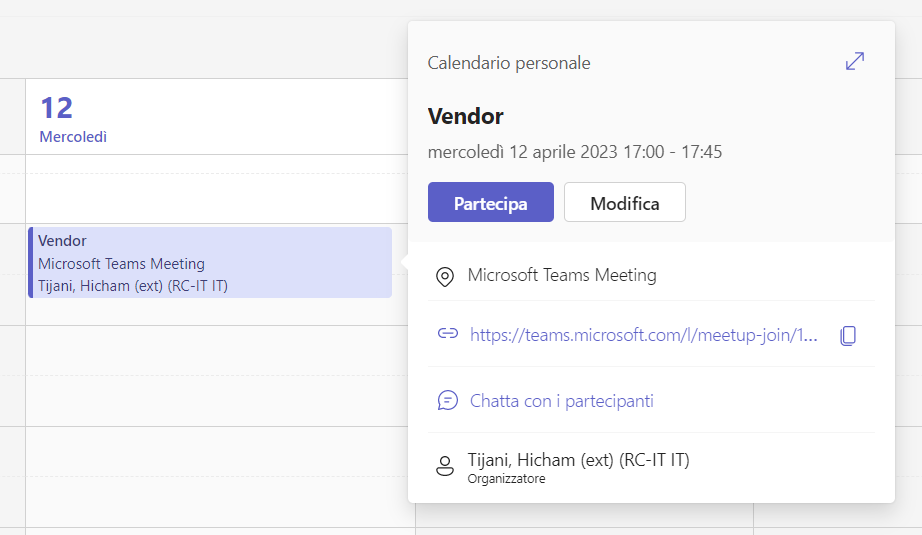
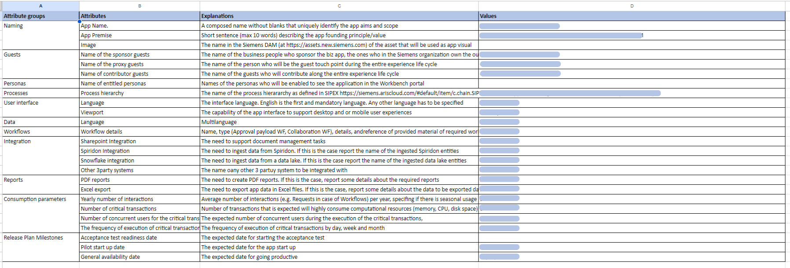
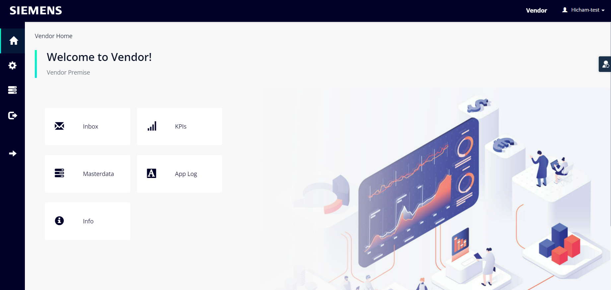

ENTICING
ENTIRING
ENGAGING
EXITING
EXTENDING
ENTICING
The enticing act is the one where the curtain of the development experience of the new biz app opens. In it you will meet your guests for the first time, and you will listen to their needs and set the rules of the game. This act is made of 2 scenes:
Approach.
This is the first scene of the entire storyline, where everything starts. You meet the app requestor and, get a first insight in their expectations and state which are the distinguishing elements of an “autoMATE” experience. Be my guest.
Be my guest.
In this scene the development experience kick off meeting happens involving the app requestor and all the relevant guests engaged by him. You listen to your guests, trying to catch which are their expectations, needs, weaknesses, and perceptions. Then you share which are the rules of the game, roles, duties that you expect from them.

ENTIRING
This is the second act in the storyline of your development experience, the one in which you create a solid baseline defining the biz app context and functional requirements. This act is made of 2 scenes:
Biz app Identity.
This is the first scene of the second act. First, you introduce the “Sketch and develop the biz app process” used to discover and document the biz app functional requirements, and then gather the biz app identity details.
Biz app business context.
In this scene you ask your guests to qualify and quantify the biz app business value, perform its Business Impact Assessment, and define the KPIs for the process that it automates.

ENGAGING
This is the third act in the storyline of your development experience, the one in which the biz app gets shape through the agile combination of sketching, developing, and testing activities. This act is made of 5 scenes:
Roles and users.
In this scene the biz app roles are defined, users assigned to roles and provisioned.
Domain model and entity pages.
In this scene the biz app domain model is created, master data values are identified and uploaded, visualization and editing pages of all entities are created.
Workflows.
In this scene, if the app foresees any workflows, they are modeled and implemented.
Integration.
In this scene, if needed, the integration layers with SharePoint, Spiridon, and the Siemens DataLake are defined and implemented.
Reports.
In this scene, if needed, reports are defined in terms of content and layout and the related report generators are implemented as PDF or Excel files.

EXITING
Tell us something more about you
EXTENDING
Your presence on the social network